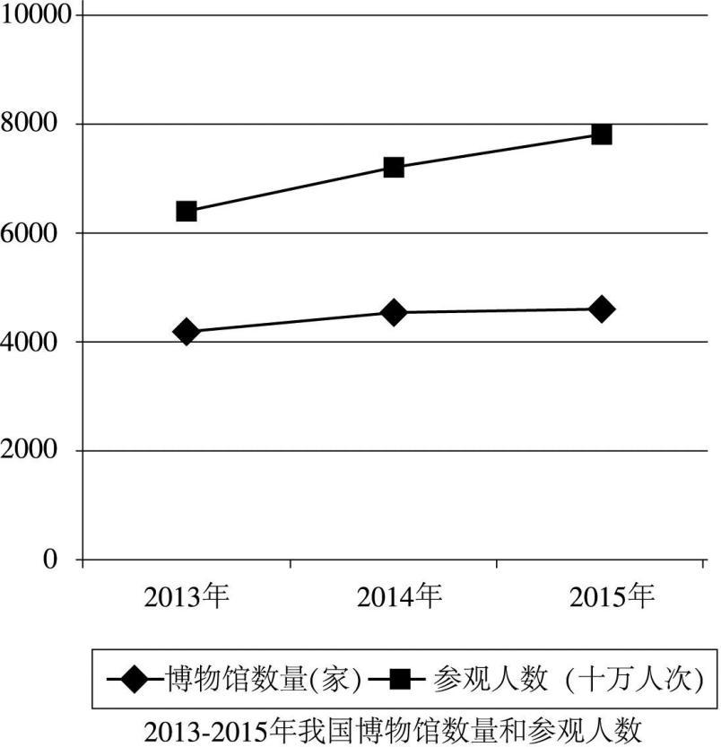

yy-2017-48
Write an essay based on the chart below. In your writing, you should
1) interpret the chart, and
2) give your comments.
You should write about 150 words on the ANSWER SHEET. (15 points)

The given chart reveals China's consecutive growth of museums and museum visitors from 2013 to 2015. The growth of museum experienced a slowdown in 2014, while the growth of museum visitors maintained a dynamic momentum.
This phenomenon can be attributed to the following reasons. Firstly, thanks to national endeavor at cultural undertakings, numerous museums have been constructed and opened freely to the public. Moreover, China's rapid economic growth underpins the cultural progress. With living-standard improving, the public demand increasingly varied spiritual nutrition, thus visiting museums and galleries has become a willing choice for more people.
However, this encouraging sign also presents challenges, like how to address the supply deficiency posed by decelerated growth of museum and people's increasingly diverse need for exhibitions. Museums can improve efficiency by embracing mobile and digital technologies like e-museum. Meanwhile, through digital pictures and interactive videos, visitors can appreciate numerous exhibits from around the world and obtain fresh visiting experiences. It's believed that through joint efforts, China's museums will constitute a bigger driving force advancing cultural development and the important means to enhance people's well-being, thus further boosting economic and social development.
本题讲解：2017 大作文——折线图「2013-2015 年我国博物馆数量和参观人数」：双线对照定抓手、三线归因、挑战+建议收口
答案（范文）：The given chart reveals China's consecutive growth of museums and museum visitors from 2013 to 2015. The growth of museum experienced a slowdown in 2014, while the growth of museum visitors maintained a dynamic momentum.
This phenomenon can be attributed to the following reasons. Firstly, thanks to national endeavor at cultural undertakings, numerous museums have been constructed and opened freely to the public. Moreover, China's rapid economic growth underpins the cultural progress. With living-standard improving, the public demand increasingly varied spiritual nutrition, thus visiting museums and galleries has become a willing choice for more people.
However, this encouraging sign also presents challenges, like how to address the supply deficiency posed by decelerated growth of museum and people's increasingly diverse need for exhibitions. Museums can improve efficiency by embracing mobile and digital technologies like e-museum. Meanwhile, through digital pictures and interactive videos, visitors can appreciate numerous exhibits from around the world and obtain fresh visiting experiences. It's believed that through joint efforts, China's museums will constitute a bigger driving force advancing cultural development and the important means to enhance people's well-being, thus further boosting economic and social development.
第 0 步：先立机制——线图作文的读图动作：双线分开读，找"不同速"
两条指令定两件事：1) interpret the chart（必答点 1：解读图表）+ 2) give your comments（必答点 2：发表评论），约 150 词。线图读趋势；本题的特别处是双线——博物馆数量与参观人数各是一条线，读图动作必须分开读、再对照：数量线连年攀升但增速放缓，人次线则保持稳定增长的强劲势头。对照之后全文抓手自然浮出："双升不同速"。
这个抓手直接决定后两段怎么写：段 2 归因要分线接住——为什么馆多了（国家支持、经济托底），为什么人来了（生活水平提高、精神需求多样）；段 3 评论则从"不同速"里长出矛盾——馆的增速放缓 vs 人的需求多样，供不应求的隐忧与对策正是从这条缝隙里挖出来的。只把两线揉成一句"都在涨"，段 3 就没了支点。
第 1 步：审图表——细节 → 解析 → 寓意
| 细节信息 | 信息解析 | 推导寓意 |
|---|---|---|
| 图表标题「2013-2015 年我国博物馆数量和参观人数」 | 时间跨度三年；对象 = 我国博物馆事业 | 分析须扣"文化事业繁荣"的大背景 |
| 数量线：连年上升，增幅先大后小 | 博物馆持续增加，但增速放缓 | 段 2 归因线一：国家支持文化事业；段 3 挑战源：增速放缓 |
| 人次线：稳定强劲攀升 | 参观需求旺盛 | 段 2 归因线二：经济托底 + 生活水平提高；段 3 需求端：日益多样 |
第 2 步：谋篇——三段各司其职
- 段 1（interpret）：总起句交代图表反映的整体情况（museums 与 museum visitors 双双连续增长）→ 对照句把两条线的不同节奏一句话压紧（数量线增速放缓 vs 人次线势头强劲）。两句把图读完整，不逐点报数。
- 段 2（归因）：过渡句开启原因分析（This phenomenon can be attributed to...）→ 原因一（Firstly）：国家支持文化事业，大批博物馆建成并免费开放——解释"馆为什么多"；原因二（Moreover）：经济快速发展托底文化进步（underpin），生活水平提高使人们需要更多样的精神食粮，主动走进博物馆——解释"人为什么来"。两条归因线各接一条线，互不重叠。
- 段 3（comments）：让步转折立论（However, this encouraging sign also presents challenges）——可喜现象背后是挑战：馆的增速放缓 vs 观展需求日益多样，供不应求如何解决；随后给两条对策（博物馆拥抱移动数字技术提高效率；数字图片与互动视频带来全新观展体验）；最后主语从句展望收篇（It's believed that... will constitute a bigger driving force... thus further boosting...）。评论有矛盾、有对策、有展望，不是空喊"文化真好"。
第 3 步：句型升格——五条路径
- 总起句带"连续"语义：
The given chart reveals China's consecutive growth of museums and museum visitors from 2013 to 2015.——consecutive（连续的）一词把三年走势说尽，比 every year it increases 高一档。 - while 对照句：
The growth of museum experienced a slowdown in 2014, while the growth of museum visitors maintained a dynamic momentum.——一个 while 把两条线的"不同速"压进一句；experienced a slowdown（增速放缓）与 maintained a dynamic momentum（保持强劲势头）动宾搭配地道，是图表描述的万能对子。 - 归因过渡 + thanks to / underpin：
This phenomenon can be attributed to the following reasons.（be attributed to 归因于）开段；thanks to national endeavor at cultural undertakings（得益于国家对文化事业的努力）给原因一挂上庄重的状语；China's rapid economic growth underpins the cultural progress——underpin 取"构成……的基础、从底部支撑"义，比 support 厚重，是本段的词义亮点。 - with 复合结构 + thus 分词结果：
With living-standard improving, the public demand increasingly varied spiritual nutrition, thus visiting museums and galleries has become a willing choice for more people.——with + 名词 + 现在分词作伴随状语交代大背景，thus 引出结果，一句话完成"背景 → 需求 → 行为"的三级推理。 - It's believed that 主语从句展望：
It's believed that through joint efforts, China's museums will constitute a bigger driving force advancing cultural development and the important means to enhance people's well-being, thus further boosting economic and social development.——信息量大时把次要信息处理成状语（through joint efforts）、定语（advancing...），避免从句叠加；句尾 thus further boosting 用分词收口，把"博物馆 → 文化 → 民生 → 经济社会"的推进链挂在一句话上。
易错点
- 两线揉成一条：只写"博物馆和参观人数都在增长"——"不同速"的对照丢了，段 3 的挑战就没有来处。
- 只描述不评论：漏必答点 2；comments 要有"挑战 + 对策 + 展望"三层，"Museums are good" 式空赞不给力。
- 归因空洞：写成"人们热爱文化"的泛论——国家支持与免费开放、经济托底、生活水平提高带来精神需求，才是本题的归因链条。
- 数据张冠李戴：把"增速放缓"安到人次线上——放缓的是博物馆数量线，人次线始终强劲。
- underpin 识破不了：不认识则段 2 原因二写不出来——"从底部支撑"即"为……奠定基础"。
- 词数失衡：段 1 描述占掉大半，归因与评论被挤瘪——150 词三段，描述只留约三分之一。
记忆锚点：线图双线 = 分开读 + 对照找"不同速"；三段 = 描述（consecutive growth + while 对照句）→ 归因（政策线 Firstly / 经济+需求线 Moreover）→ 评论（However 挑战 → 数字技术对策 → It's believed 展望）；句型三件套 = experienced a slowdown... maintained a dynamic momentum、with...improving, thus...、It's believed that... thus further boosting...。